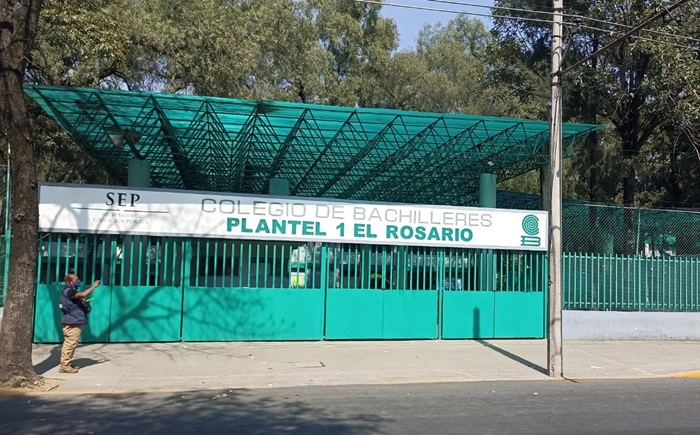

Somos una asociación estudiantil creada por alumnos del Colegio de Bachilleres con el propósito de promover el respeto, la igualdad y la inclusión entre todas las personas. Nuestro proyecto nació como una iniciativa escolar para informar sobre el racismo, sus consecuencias y la importancia de construir una sociedad libre de discriminación.
Creemos que todas las personas tienen el mismo valor y merecen ser tratadas con dignidad, sin importar su color de piel, origen, cultura, idioma o nacionalidad. Por ello, trabajamos para fomentar valores como la empatía, la solidaridad, la tolerancia y el respeto hacia la diversidad.
Nuestra misión es crear conciencia en la comunidad educativa mediante información clara y actividades que inviten a la reflexión. Queremos que los jóvenes comprendan que el racismo afecta la convivencia y limita las oportunidades de muchas personas, por lo que es responsabilidad de todos contribuir a eliminarlo.
Nuestra visión es construir una comunidad donde prevalezcan la igualdad, el diálogo y el respeto mutuo, demostrando que la diversidad cultural es una riqueza que fortalece a la sociedad.
NUESTRA MISION
Nuestra misión es sensibilizar a la comunidad escolar sobre las consecuencias del racismo y promover acciones que fortalezcan el respeto por la diversidad. Buscamos que cada persona reconozca que todos tenemos los mismos derechos y merecemos las mismas oportunidades.
NUESTRA VISION
Aspiramos a formar una comunidad donde la igualdad, la tolerancia y el respeto sean valores presentes en la vida diaria. Queremos inspirar a los jóvenes a convertirse en agentes de cambio que promuevan la inclusión y rechacen cualquier forma de discriminación.
NUESTROS VALORES
RESPETO: Valorar a todas las personas sin importar su origen o cultura.
IGUALDAD: Defender los mismos derechos y oportunidades para todos.
EMPATIA: Comprender y apoyar a quienes enfrentan situaciones de discriminación.
SOLIDARIDAD: Trabajar juntos para construir una sociedad más inclusiva.
RESPONSABILIDAD: Actuar con compromiso para generar un cambio positivo.
